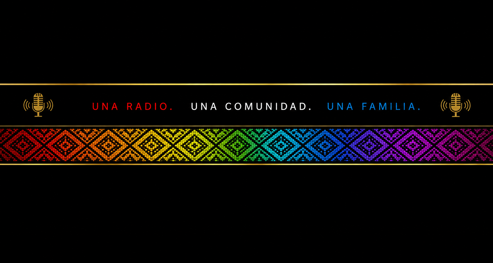

Un espace pour relier les souvenirs du Pérou, la renaissance depuis les Landes et les futures radios amies du monde.
Le point de départ de Radio Caprichos : une chambre, un ordinateur, de la musique et l’envie de créer une communauté.
Le lieu de renaissance du projet en 2026, entre mémoire, famille, technologie et nouvelle étape.
Les chats et radios latines ont inspiré l’idée de relier radio, musique, demandes de chansons et conversations en direct.
Un espace naturel entre l’Europe et l’Amérique latine, dans l’esprit bilingue de Radio Caprichos.
Cette section accueillera plus tard des radios, communautés et projets musicaux qui partagent le même esprit de connexion.
